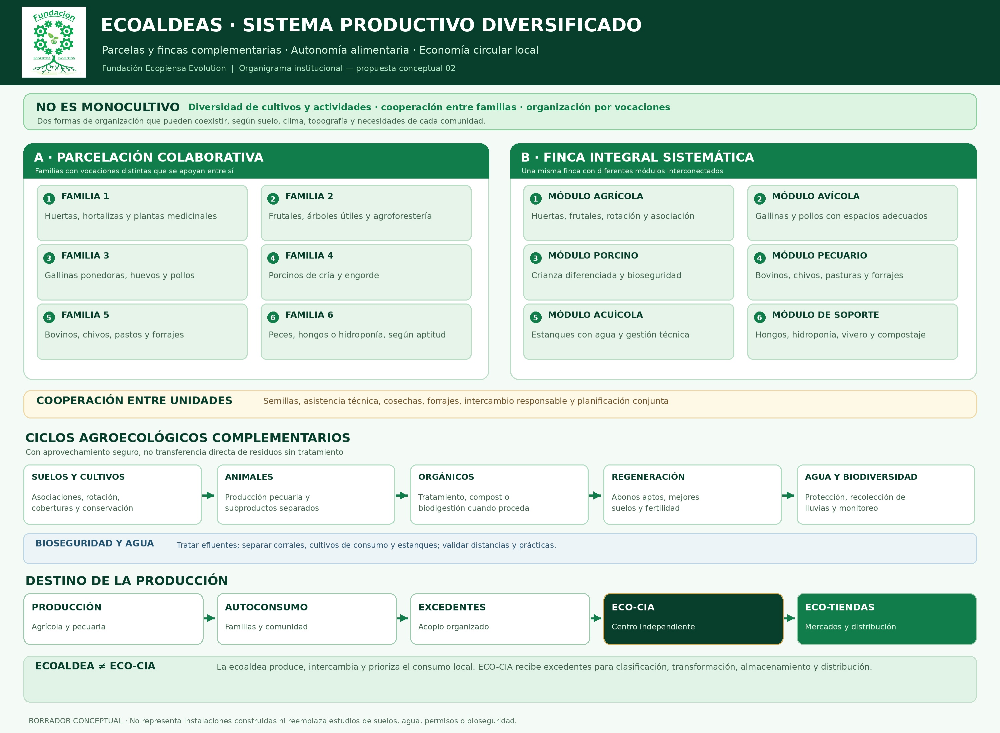

01 · Vivienda y organización rural
Unidades familiares y organización de parcelas productivas, con vivienda rural agroecológica como línea de desarrollo.
.png)
Fundación Ecopiensa Evolution · Proyecto territorial
Red de fincas y parcelas familiares: producción complementaria, autoconsumo y excedentes

Las familias desarrollan actividades diferentes o módulos integrales: huertas, frutales, aves, porcinos, bovinos, caprinos y peces. Los alimentos se destinan primero al autoconsumo. Las fracciones orgánicas aprovechables, incluidos estiércoles manejados por separado, pueden entrar en tratamientos controlados que permitan obtener enmiendas aptas. Los cultivos reciben ese aporte solo cuando es técnicamente seguro y legalmente admisible. La producción sobrante, cuando cumple condiciones de calidad, se entrega a una ECO-CIA independiente.
Unidades familiares y organización de parcelas productivas, con vivienda rural agroecológica como línea de desarrollo.
Verduras, frutales y plantas medicinales, adaptadas al piso térmico y las características del suelo.
Gallinas ponedoras, pollos, porcinos, ganado y chivos; manejo de subproductos orgánicos.
Producción de peces, cultivo de hongos y sistemas de hidroponía.
Lectura del territorio, agroecología, recuperación de suelos y seguimiento ambiental.
Recirculación de materiales y aprovechamiento orgánico, según viabilidad técnica y requisitos aplicables.
Asistencia y transferencia de conocimiento, monitoreo de biodiversidad, suelo y productividad.
Acopio, procesamiento, almacenamiento, distribución y articulación comercial con el territorio.